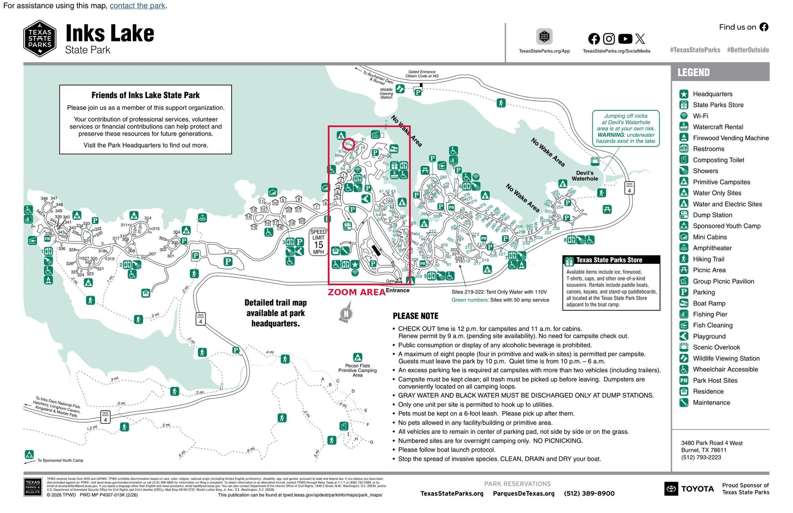
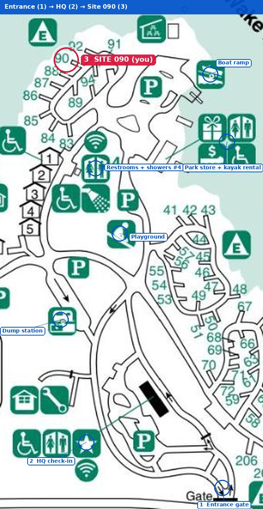
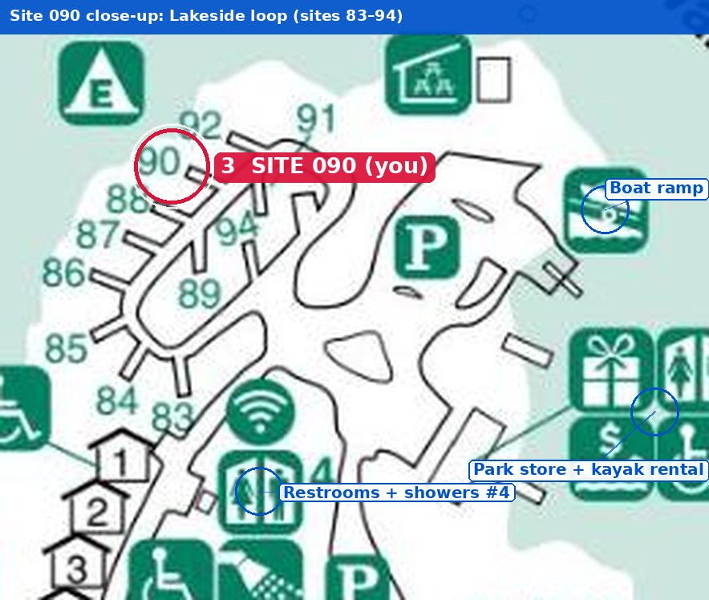

Fri Oct 30 to Sun Nov 1, 2026 · Lakeside site 090 · Burnet, Texas · about 66 miles from downtown Austin
| Item | Detail |
|---|---|
| 📍 Park | Inks Lake State Park, 3480 Park Road 4 West, Burnet, TX 78611 · park office (512) 793-2223 |
| 🏕️ Site | 090, Campsite Electric (water + electric), North Loop, on the lakeside loop of sites 83 to 94 next to the boat ramp |
| 📅 Dates | Arrive Fri Oct 30, check-in from 2:00 PM · depart Sun Nov 1, check-out by 12:00 PM · 2 nights |
| ⛺ Setup | 1 tent, 2 vehicles, no pets |
| 🏢 Office | Headquarters open 8:30 AM to 5:00 PM daily. Front gate open 6 AM to 10 PM; after 10 PM use the gate code in the reservation email (it changes on Nov 1). |
| 🌅 Sun | Fri sunset 6:47 PM · Sat sunrise 7:47 AM, sunset 6:46 PM · Sun sunrise 6:48 AM (clocks fall back Sat night) |
| 🌡️ Weather | Late October in Burnet is usually mild: highs in the mid 70s °F, lows near the low 50s °F. Check the forecast around Oct 23, when it starts to be reliable. |
| 🕑 Time change | DST ends 2:00 AM Sunday Nov 1. Phones adjust on their own; you gain an hour of sleep and check-out is noon CST. |
| Rank | 🛣️ Road | 📏 Miles | Share | 🧭 What happens |
|---|---|---|---|---|
| #1 | TX-29 West | 32.4 | Turn left off 183A near Liberty Hill, straight through Bertram and Burnet (TX-29 becomes Polk St, then Buchanan Dr in town) | |
| #2 | 183A Toll | 13.2 | Cedar Park and Leander. Toll road (TxTag or pay by mail); free US-183 runs alongside | |
| #3 | US-183 Express Toll | 7.7 | Express lanes north of MoPac; the general lanes are free | |
| #4 | MoPac (Loop 1) | 6.9 | North from Enfield Rd, then MoPac Express lane up to US-183 | |
| #5 | Park Road 4 | 3.0 | Left (south) off TX-29 about 9 mi west of Burnet. No stopping along Park Road 4 | |
| #6 | Downtown streets | 1.5 | W 6th St to Enfield Rd |
The legs above add up to about 64.7 mi; the last 1.5 mi are short ramps and connectors. Want to skip tolls? Stay on free US-183 north to TX-29 in Liberty Hill. It adds a few minutes and some traffic lights.
| ⏰ Leave Austin | 🏁 Arrive (approx.) | Notes |
|---|---|---|
| 12:30 PM Fri | 2:00 PM | Best Check-in opens, daylight to set up, office still open |
| 3:00 PM Fri | 4:45 PM | OK Friday traffic on MoPac/183 adds 20 to 30 min; arrive before the office closes at 5 |
| After 5 PM Fri | ~7:00 PM | Late Setting up after sunset (6:47 PM). Go straight to the site; check in at HQ 8:30 to 9:30 AM Saturday |
From the official Texas Parks and Wildlife park map (PWD MP P4507-015K). Site 090 is on the small loop of sites 83 to 94 on the north shore, right by the boat ramp, park store and restroom/shower building #4. Lake on three sides, with a short walk to everything.



| Rank | 📌 Place | 🚶 Walk (approx.) | Closeness | Why it matters |
|---|---|---|---|---|
| #1 | 🚻 Restrooms + showers #4, Wi-Fi | 2 min | Closest bathhouse, wheelchair accessible | |
| #2 | 🚤 Boat ramp | 3 min | Launch for kayaks and canoes | |
| #3 | 🛶 Park store + watercraft rental | 4 min | Ice, firewood, snacks; kayaks, canoes, paddleboards, paddle boats | |
| #4 | 🛝 Playground | 5 min | South of restroom #4 | |
| #5 | ⭐ Headquarters | 10 min | Check-in, maps, ranger program info; easier by car | |
| #6 | 🏞️ Devil's Waterhole | short drive | Scenic swimming/paddling cove on the east side; trailhead near sites 250s |
Walking times are estimates from the map scale.
| Time | Plan |
|---|---|
| 12:30 PM | Leave Austin (fill gas and grab lunch on the way; Burnet has plenty of options) |
| 2:00 PM | Check in at headquarters, then drive to site 090 (Figure 3) |
| 2:30 PM | Pitch the tent, set up the kitchen, hook up to the site's water and electric |
| 4:00 PM | Walk to the park store and boat ramp; buy ice and firewood (do not bring firewood from home) |
| 6:47 PM | Sunset over the lake from the site |
| 7:00 PM | Dinner, campfire if there is no burn ban, s'mores |
| 10:00 PM | Quiet hours begin |
| Time | Plan |
|---|---|
| 7:47 AM | Sunrise; pancakes at camp |
| 8:30 AM | Short hike or bike loop before it warms up |
| 10:00 AM | 🎣 Fishing with a Ranger (learn the basics). No fishing license is needed to fish from the bank or a pier inside a Texas state park |
| 12:00 PM | 🪨 Texas Rocks! with a geologist; then lunch at camp |
| 1:30 PM | 🛶 Rent kayaks or a canoe at the park store (rentals until 3 PM, boats back by 4 PM). Or drive 15 min to Longhorn Cavern State Park for a cave tour |
| 4:30 PM | Early dinner; costumes and glow sticks on |
| 6:00 PM | 🦉 Creatures of the Night hike |
| 8:00 PM | 🦋 Moth Madness with Ranger Sam |
| Night | Clocks fall back at 2 AM: an extra hour of sleep |
| Time (CST) | Plan |
|---|---|
| 6:48 AM | Sunrise (new standard time) |
| 8:00 AM | Breakfast, then a last paddle or walk along the shore |
| 10:00 AM | Pack up; let the tent dry in the sun before folding |
| 12:00 PM | Check-out deadline (no need to stop at HQ) |
| 12:30 PM | Optional stop: Buchanan Dam overlook or lunch in Burnet, then drive home |
| Rank | 🕑 Time | 🎟️ Program | What it is | Fit |
|---|---|---|---|---|
| #1 | 6:00 PM | 🦉 Creatures of the Night | Guided evening hike about nocturnal animals. Perfect for Halloween | Must do |
| #2 | 10:00 AM | 🎣 Fishing with a Ranger | A park volunteer teaches fishing basics | Great for kids |
| #3 | 8:00 PM | 🦋 Moth Madness | Evening "mothing" with Ranger Sam: lights, sheets, and lots of moths | Night owls |
| #4 | 12:00 PM | 🪨 Texas Rocks! | A geologist on the pink granite and other Central Texas rocks | Curious minds |
Meeting spots are listed at HQ and on the park events page. Programs can change, so check at check-in.
| Rank | 💵 Item | Amount | Share | Status |
|---|---|---|---|---|
| #1 | 🏕️ Campsite use fee (2 nights) | $46.00 | Paid | |
| #2 | 🎫 Entrance, 2 adults × 2 days × $7 | $28.00 | Paid Kids 12 and under are free | |
| #3 | 🛶 Kayak/canoe rental, 2 hours (optional) | $30.00 | Estimate $20 first hour, $10 each extra hour, per boat | |
| #4 | 🪵 Firewood and ice (optional) | varies | Park store or firewood vending machine |
Tick items as you pack; ticks are saved in this browser only.
| Rank | 📋 Rule | Detail |
|---|---|---|
| #1 | 🚪 Gate hours | Front gate 6 AM to 10 PM. Arriving later: gate code from the reservation email; the code changes on Nov 1. Late arrivals check in at HQ 8:30 to 9:30 AM next morning |
| #2 | 🌙 Quiet hours | 10 PM to 6 AM. Visitors must leave by 10 PM |
| #3 | 🔥 Fires | Fires only in the site's fire ring, and only when there is no burn ban. Ask at check-in |
| #4 | 👥 Site limits | Up to 8 people per site; extra parking fee for more than two vehicles; park in the center of the pad |
| #5 | 🍺 Alcohol | Public consumption or display of alcohol is prohibited |
| #6 | 🏊 Water | No lifeguards. Jumping off rocks at Devil's Waterhole is at your own risk (underwater hazards). Watch for algae in still water |
| #7 | 🧾 Cancel or change | Cancel 5+ days ahead (by Oct 25): $10 penalty. Less than 5 days: $10 per night. No-show: whole fee forfeited |